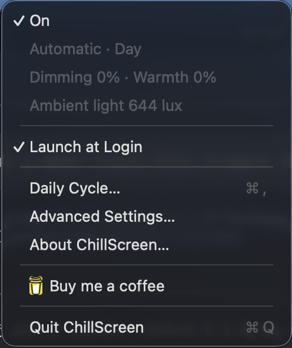
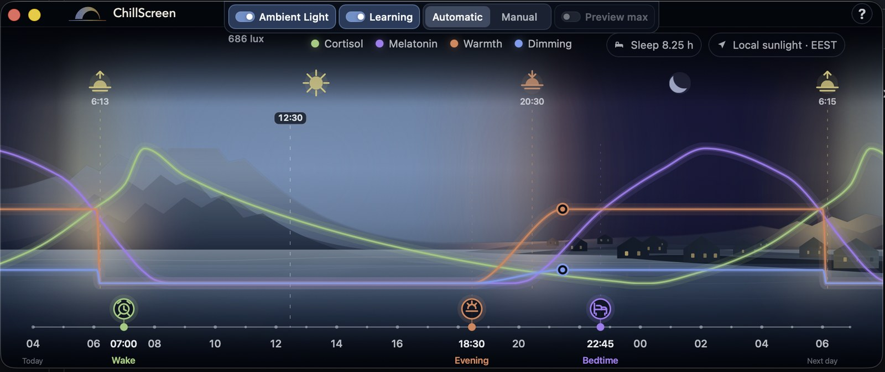
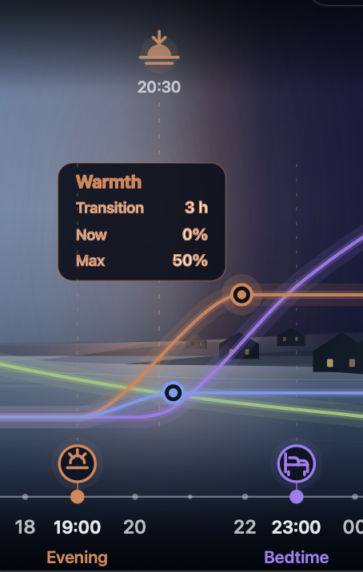
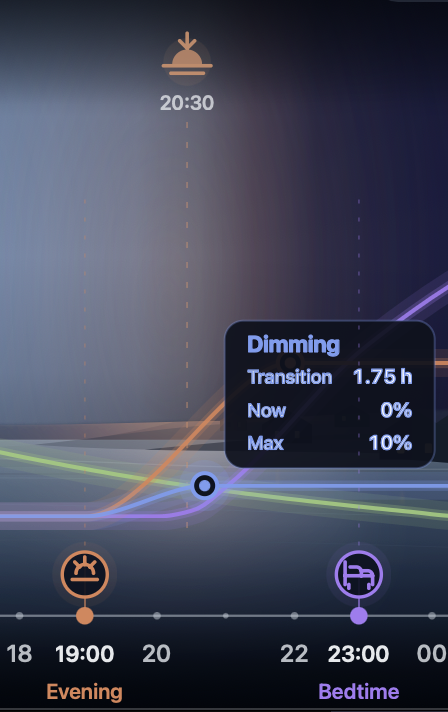
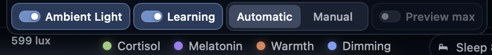
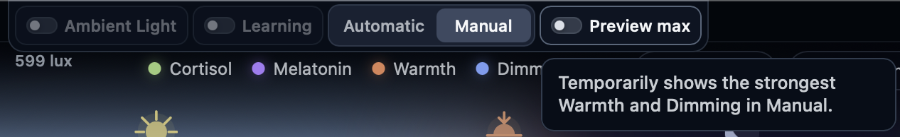
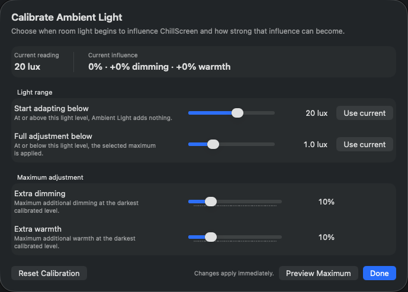
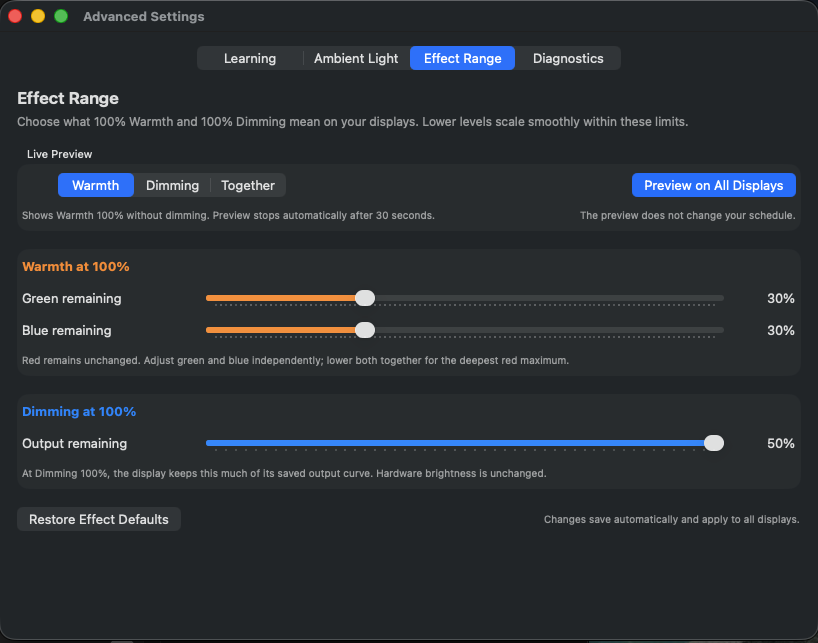
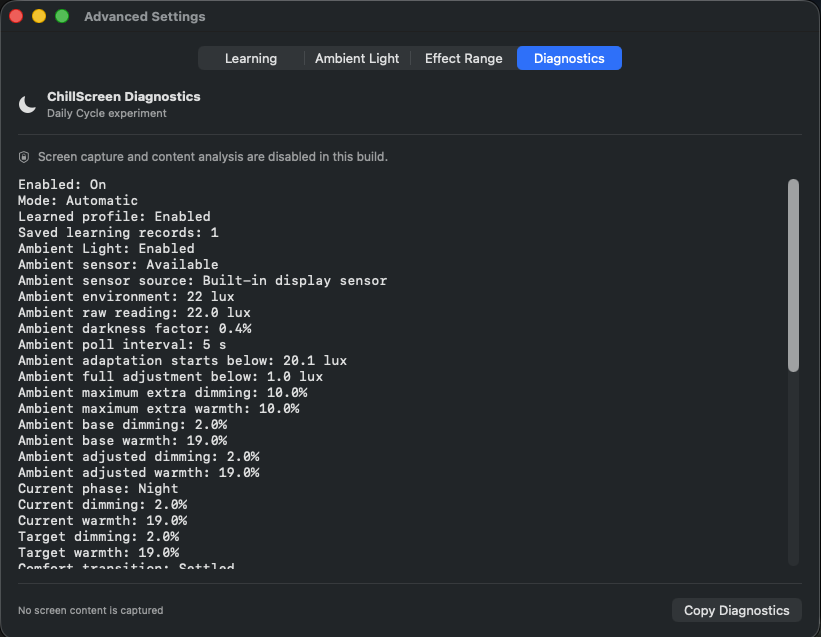

Getting started
Requirements
- macOS 14 Sonoma or later.
- Location access is optional.
- Ambient Light requires a compatible light sensor detected by ChillScreen.
Installation
- Download the latest
ChillScreen-*.dmgfrom the GitHub release. - Open the disk image and drag ChillScreen into Applications.
- In Applications, Control-click or right-click ChillScreen and choose Open.
- Confirm Open in the macOS security dialog.
First setup
- Click the ChillScreen icon in the macOS menu bar and open Daily Cycle.
- Set your typical Wake, Evening, and Bedtime.
- Choose Automatic or Manual.
- Optionally enable Location, Ambient Light, Learning, or Launch at Login.
- Turn ChillScreen On from the menu-bar menu.
Menu-bar status and controls
The menu shows whether ChillScreen is On, the active mode and phase, current Dimming and Warmth, and the ambient-light reading in lux when available.

From the same menu you can toggle Launch at Login, open Daily Cycle or Advanced Settings, open About, say thanks through Buy me a coffee, or quit the app.
Daily Cycle
Daily Cycle puts the whole 24-hour schedule on one shared timeline. It shows Wake, Evening, Bedtime, optional local sunrise and sunset, and four curves:

- Warmth in orange;
- Dimming in blue;
- Cortisol reference context in green;
- Melatonin reference context in purple.
The Cortisol and Melatonin curves are normalized, research-informed reference profiles. They are not measurements of your individual hormone levels.
Drag Wake, Evening, and Bedtime horizontally along the timeline. You can also select a marker and use the keyboard for finer control. Automatic and Manual keep separate schedules and restore the values saved for each mode.
Warmth and Dimming
Warmth shifts the display toward warmer, redder tones. Dimming reduces perceived brightness. They are independent, so each can use its own maximum strength and transition duration.
In Manual mode, drag an effect handle vertically to change its maximum and horizontally to change how long the transition takes from Evening to that maximum. The temporary card shows Transition, Now, and Max.


Automatic mode
Automatic manages Warmth and Dimming throughout the day. You can still move Wake, Evening, and Bedtime. Depending on your configuration, its calculation can include:

- your daily schedule and current time;
- optional local sunrise and sunset;
- optional Ambient Light and the current lux level;
- locally learned preferences when Learning is enabled.
Location permission is optional. If granted, ChillScreen stores coordinates locally to calculate sunrise and sunset; it does not maintain a location history.
Manual mode and Preview max
Manual gives direct control over both curves. Use it when you want a specific transition or maximum effect, are testing a comfortable setting, or the current environment is unusual.

Preview max temporarily applies the strongest Warmth and Dimming configured in Manual. It checks the result without changing the current point in the daily cycle.
Ambient Light
Open Advanced Settings → Ambient Light. In Automatic mode, a darker room can add extra Dimming and Warmth after Evening begins. Ambient Light is independent of Learning and does not operate in Manual mode.

When several checked sensors are available, ChillScreen uses the brightest checked reading. You can exclude individual sensors.
Calibration

- Start adapting below is the level at or above which room light adds nothing.
- Full adjustment below is the level at or below which the selected maximum is applied.
- Extra dimming and Extra warmth set the maximum additions at the darkest calibrated level.
- Use current copies the current sensor reading into a threshold.
Between the thresholds, influence increases progressively as the room gets darker. Preview Maximum checks the strongest configured ambient effect. If readings stop, ChillScreen keeps the last valid reading instead of inventing a room-light change.
Learning
Learning uses evening adjustments to refine future Automatic recommendations. It is optional, transparent, and local.

Learning handles are available when ChillScreen is On, Automatic and Learning are selected, and the current time is between Evening and the earlier of Wake or 06:00. Your display changes immediately while you drag.
After you stop, ChillScreen waits ten seconds and saves the latest values for that evening. Your choice remains exact today; it influences the recommendation for the next evening. If you adjust several times in one evening, the latest saved record represents that evening, while earlier records remain visible as replaced.
Learning History exposes the base-profile weight, newest-evening multiplier, history half-life, individual record weights, effective influence, Undo, and Reset history. Ambient Light is stored separately so temporary room conditions are not learned as a permanent preference.
Effect Range
Open Advanced Settings → Effect Range to define what 100% Warmth and 100% Dimming mean on your displays.

Green and Blue remaining can be adjusted independently; lowering both creates a deeper red maximum. Output remaining controls the darkest software Dimming maximum. These settings define the range — they do not set the current effect level.
Warmth, Dimming, and Together previews run temporarily on all displays. Restore Effect Defaults returns to the safe default range.
Diagnostics
Open Advanced Settings → Diagnostics to inspect ChillScreen's current operating state and prepare a useful bug report.

Diagnostics includes the active mode, current and target effect values, display state, Ambient Light availability, and other technical details. Use Copy Diagnostics when reporting a reproducible problem. ChillScreen does not capture screen contents.
Multiple displays and Launch at Login
ChillScreen applies the same active targets to supported connected displays, while tracking each display separately for safe restoration after the app is turned off, quits, wakes, or the display arrangement changes.
Enable Launch at Login from the menu if you want the daily cycle to start whenever you sign in.
Permissions and privacy
ChillScreen does not capture or analyze screen contents. Location, schedules, Learning, Ambient Light preferences, and calibration remain local. Read the complete Privacy page.
Troubleshooting
The screen does not change
Check that ChillScreen is On, the current Warmth or Dimming value is above 0%, the schedule has reached Evening, and the selected mode contains the settings you intended.
Sunrise or sunset looks wrong
Enable optional Location access and check that macOS is using the correct time zone.
Learning controls do not appear
Confirm that the app is On, Automatic is selected, Learning is enabled, and the time is inside the evening learning window.
Ambient Light is unavailable
Some Macs expose their sensor only while the built-in display is open and active. In Advanced Settings, confirm that at least one detected sensor is enabled and wait for the selected polling interval. Automatic continues normally without a reading.
Reporting a problem
Open Advanced Settings → Diagnostics and use Copy Diagnostics. Include your macOS version, Mac model, connected displays, expected behavior, actual behavior, and reproduction steps. Do not post private coordinates in a public issue.
Updates, availability, and turning the app off
ChillScreen does not currently update itself. Quit the app, replace it in Applications with the latest release, and launch it again. Preferences and Learning history are stored separately and remain available.
Turning ChillScreen Off restores affected displays. Every feature remains available after two weeks, including when you choose €0.